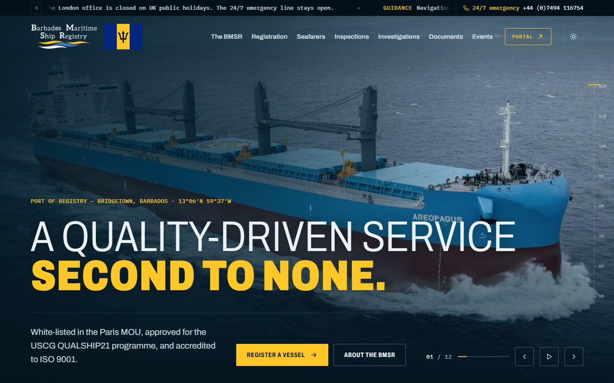

A
Refined Hull
A quality-driven service second to none.
- Font
- Archivo (current), opened up from condensed
- Weights
- Light 300 lead-in, heavy 900 key phrase
- Case
- Capitals
Closest to the version you liked. The weight contrast makes the key phrase stand out, and the wider letters are easier to read.